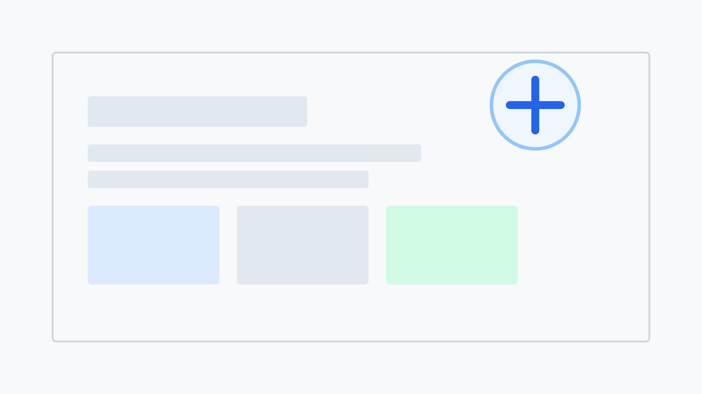
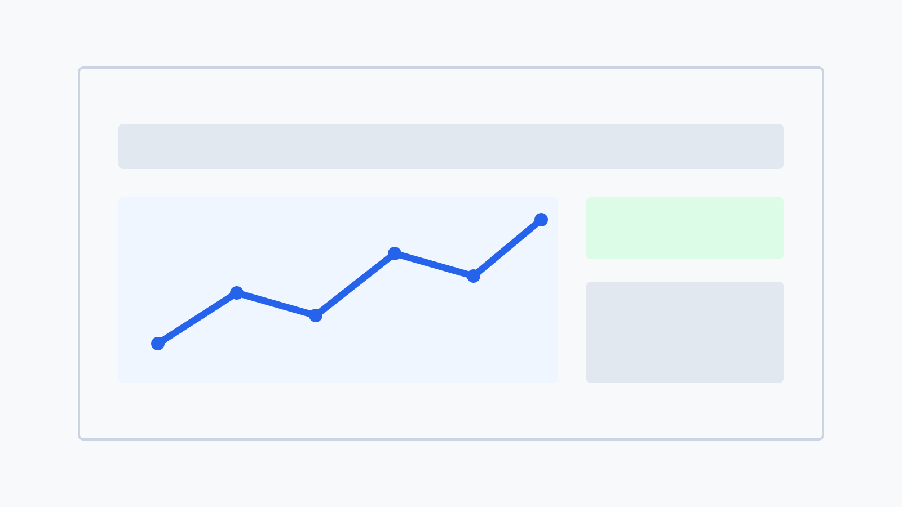
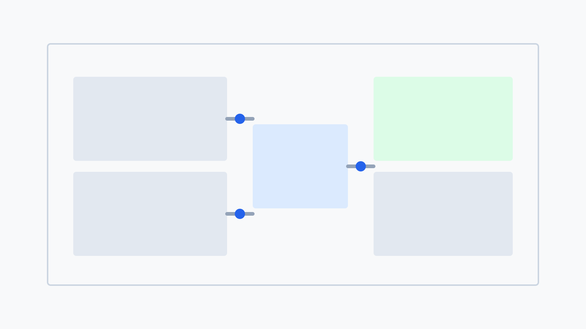

$3.5M
Business value delivered
Product Strategy and Execution
Product Manager with 5+ years across healthcare, fintech, pharma, and operations platforms. I focus on discovery, prioritization, and execution systems that improve adoption, speed, and business impact.
Start a conversation$3.5M
Business value delivered
292%
Highest ROI outcome
93%
Onboarding time reduction
22%
Default rate reduction
The Problem
Nonprofit partners could not efficiently access Medicaid member care data. Manual coordination via emails and spreadsheets caused intervention delays, duplicated efforts, and prevented outcome measurement.
The Value
30-40% faster interventions, $18M in nonprofit grant renewals enabled, and $400K annual cost savings.
Process
User Research -> Workflow Mapping -> API Integration -> Data Modeling -> A/B Testing -> GTM Planning -> KPI Instrumentation.
The Problem
Manual credit approvals took 2-7 days, creating checkout abandonment. Inconsistent risk assessment led to defaults or lost revenue, while finance teams lacked real-time portfolio visibility.
The Value
8-12% conversion lift, 22% default reduction, and 95% automation of manual reviews.
Process
Risk Discovery -> API Design -> Decision Rule Modeling -> Data Pipeline Alignment -> Rollout Sequencing -> Performance Monitoring.
The Problem
Post-ERP migration left data fragmented across warehouse and legacy platforms. Finance teams spent disproportionate effort reconciling transactions, causing working capital drag and slower revenue recognition.
The Value
292% ROI ($3.5M benefit), major reduction in manual reconciliation effort, and improved inventory and compliance performance.
Process
System Discovery -> Integration Architecture -> Reconciliation Data Modeling -> Dashboard Design -> Release Phasing -> Governance Cadence.

Re-architected onboarding and referral orchestration for partner teams.
145% throughput improvement

Designed real-time API-led decision flows with measurable risk controls.
22% default reduction

Built reconciliation and dashboarding to accelerate operational decisions.
292% ROI increase
Qualitative interviews, workflow observation, and baseline KPI definition.
Impact-effort scoring with risk controls and dependency mapping.
Structured releases with clear acceptance criteria and stakeholder alignment.
Experimentation, usage analytics, and iterative roadmap refinement.
Open to product strategy, platform PM, and transformation initiatives focused on measurable business outcomes.